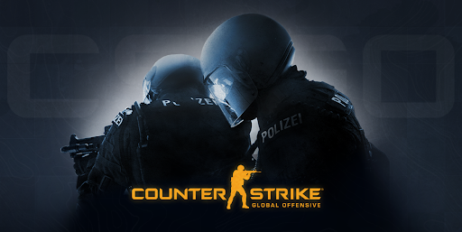

Counter-Strike Global Offensive

GAME PLAY
Global Offensive, like prior games in the Counter-Strike series, is an objective-based, multiplayer first-person shooter. Two opposing teams, known as the Terrorists and the Counter-Terrorists, compete in game modes to complete objectives, such as securing a location to plant or defuse a bomb and rescuing or capturing hostages. At the end of each round, players are rewarded based on their individual and their teams performance with in-game currency to spend on other weapons or utility in subsequent rounds. The amount of money given varies on the game mode. Winning rounds generally rewards more money than losing does, and completing objectives such as killing enemies gives cash bonuses.Uncooperative actions, such as killing teammates, result in a financial penalty.
An in-progress match on Dust II, in which the player is using an AK-47
There are five categories of purchasable weapons, four being guns and the final being utilities: rifles, sub-machine guns (SMGs), heavy, pistols, and grenades. All guns have different properties and all grenade types have different in-game effects. The high explosive (HE) grenade deals damage in a small radius, the smoke grenade temporarily places a smoke screen, the decoy grenade emulates the sound of the player's primary gun, the flashbang temporarily blinds players, and the Molotov cocktail and incendiary grenades set a small area of the map on fire for a short period of time. Alongside all of the main weapons, the Zeus x27, a taser, can also be purchased. We all know that the Counter Srike first FPS that we play when we are young is so memorable and it really cool that you have a best childhood video game like this but CSGO is a enhance graphic quality and more realistic that's why so many player playing this. ACHIVEMENTS I play this like a little bit because the game is so long to play because this game is so competitive gameplay and because so boring to play solo but its really fun to play this with friends even losing.
My Higher Rank: MASTER GUARDIAN I or MG1
Here i will show the rank system
I know that im so far on the top ranks and because i dont have much time to play this game and not bad for that rank i got and im proud with it. This game is similar to Valorant like i said. Thats all again i dont have any screenshots of my ace , wins or what so ever sorry about that. You can play it on steam but there so many cheaters because of free top play goodluck.